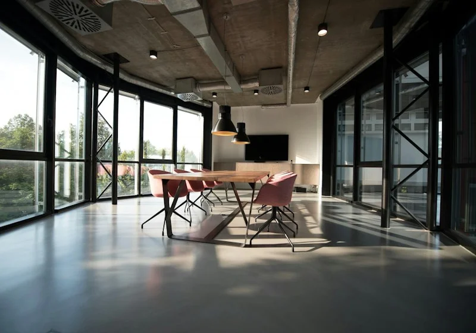
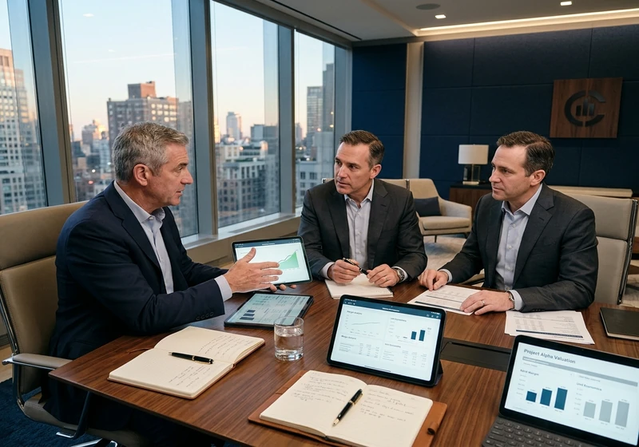
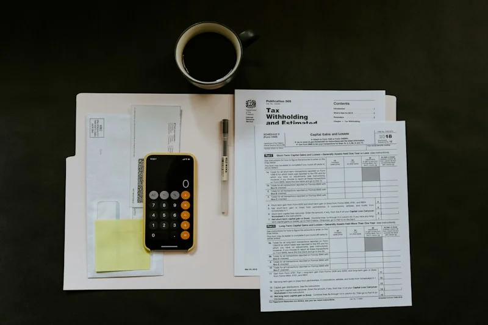
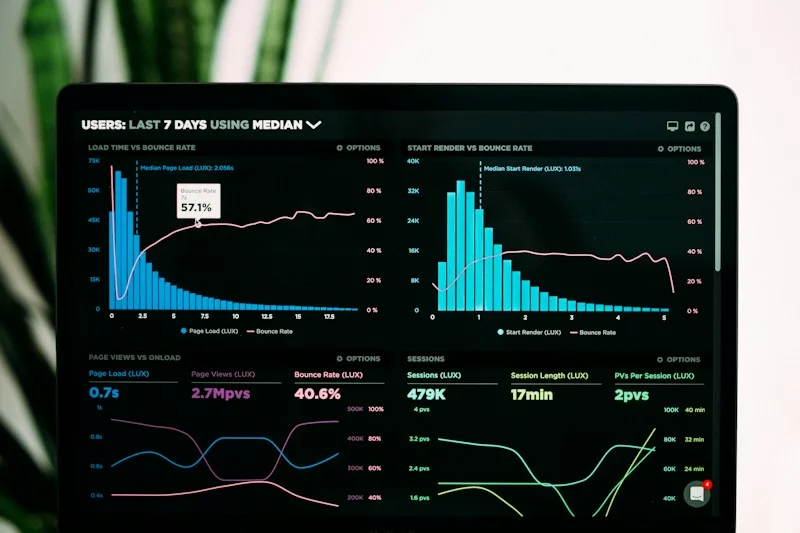

VALUE IS MORE THAN A NUMBER
Financial performance, business structure, market position and future considerations all contribute to understanding business value.
Business decisions deserve more than surface-level financial information. Explore value, evaluate opportunities and approach important transactions with a clearer strategic perspective.
A business decision can influence ownership, growth, investment and long-term direction. Understanding the financial context helps decision-makers consider what matters before moving forward.
Financial performance, business structure, market position and future considerations all contribute to understanding business value.
A potential acquisition, ownership transition or sale involves financial, commercial and strategic questions.
Organised information and structured analysis help bring relevant considerations into focus.
Contextual Market & Valuation Analysis
Explore the areas where financial analysis and strategic insight can help inform important business decisions.
Explore financial performance, business characteristics and valuation considerations to develop an informed perspective on business value.
Important transactions involve connected stages of preparation, analysis, evaluation and decision-making.
Understand objectives, information requirements and transaction context.
Examine relevant financial information, business performance and key considerations.
Consider findings, assumptions, risks and strategic implications.
Bring relevant insights together to support informed discussions and decisions.
Every organisation operates within its own commercial environment. Financial and strategic considerations can vary with its industry, operating model and stage of development.
Consider recurring revenue, customer relationships, technology assets, scalability and growth assumptions.
Consider production capacity, equipment, operating performance, supply chains and capital requirements.

Consider client relationships, service delivery, team capabilities, revenue stability and operational structure.

Consider brand positioning, customer demand, distribution, margins and business performance.
Different business circumstances can lead to different financial and strategic questions. Consider these illustrative situations.
A business owner is exploring a potential ownership transition and wants to understand the financial information and valuation considerations involved.
A business is considering an acquisition and needs to organise financial information and evaluate relevant transaction considerations.
A leadership team is reviewing financial performance and considering the information needed for future planning.
Explore educational perspectives on business value, financial performance and transaction planning.
Explore the information, assumptions and business considerations that can contribute to a valuation exercise.

Understand why organised financial records and clear reporting can be important when preparing for a transaction.

Explore strategic, financial and operational questions that may arise when considering a transaction.
Whether you are assessing business value, considering an acquisition or preparing for an ownership transition, begin with a conversation about the decisions ahead.